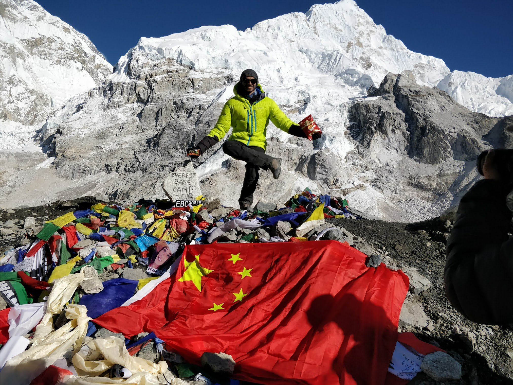
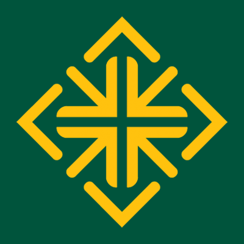

About me
Head of Sales · Co-founder · Founder & CEO · DevOps Engineer
I'm an outcome-driven leader with a track record across sales, product, and engineering. I currently lead sales at PIAS (Mountain View), where I run inbound and outbound operations, represent the firm at industry conferences, and serve as Interim PM for internal engineering—architecting AI-driven lead optimization tools and standardizing Cursor workflows.
Previously I co-founded MindLight Technology (CIO), securing $500K pre-seed and architecting AI systems that delivered 2×–4× ROAS; founded Sudokra Inc., building media automation and video localization SaaS (30+ languages, 30+ channels); and spent five years at Qventus as DevOps Engineer & Technical PM, managing AWS infrastructure and saving $800K monthly.

Education

2026MBA
University of San Francisco, San Francisco, CA
BS in Computer Science
University of Cincinnati, Cincinnati, OH
Heritage
Where I come from — the Naturell story

Where I come from
My story is rooted in where I come from. As a child in India, I watched my parents build and sell their startup, Naturell—from idea to product to market. That time left a lasting mark on how I think about building things and leading teams.
Naturell
Naturell (India) Pvt. Ltd. was founded in 2003 and moved into healthy snacking in 2007. My parents built it into a company that made nutrition bars, protein cookies, protein chips, and health foods—pioneers in that category in India.

Max Protein
Their flagship brand was Max Protein (under RiteBite)—protein bars, cookies, and crisps that helped shape the nutrition and protein bar category in India. It became the go-to for health-conscious consumers and a household name in that space.

The build
Growing up, I saw the company scale—product, distribution, and brand. By FY24, Naturell had annual revenues of around ₹129 crore. That journey from startup to a serious player in healthy snacking is the backdrop to how I approach sales, product, and execution today.

Sale to Zydus
In 2024, Naturell was sold to Zydus Wellness—a listed, public company in India (NSE/BSE), part of the Zydus Lifesciences group. The acquisition was for ₹390 crore (about $46M). Zydus Wellness took over Naturell to expand into healthy snacking; for Naturell, it meant access to Zydus’s distribution, supply chain, and marketing reach. So the startup my parents built is now part of a large Indian public company.
The story in our voices
This is an AI voice–cloned podcast I made about the story of Naturell. From conversations with my dad and my notes, I cloned our voices and produced this custom episode—the Naturell journey, in our words.
Who am I
Quick answers
Where are you from?
California → London → Mumbai → back to the US for undergrad at University of Cincinnati, then Silicon Valley. Based in Albany, CA.
Why software & product?
Anyone can build anything with enough time and effort. I love bridging sales and business goals with technical execution—from DevOps to AI to product pipelines.
Desert island picks?
Lamp, genie, three perfect wishes.
Favorites?
Movies: Zootopia 2, Paddington 2, Shrek 2. TV: Gilmore Girls, Veronica Mars, Duck Tales.